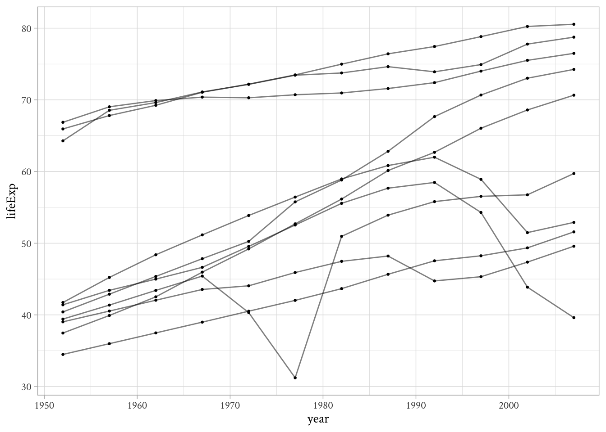
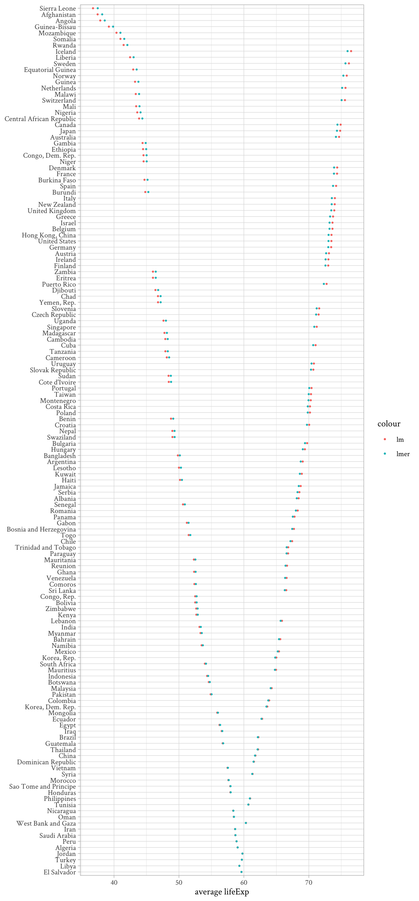
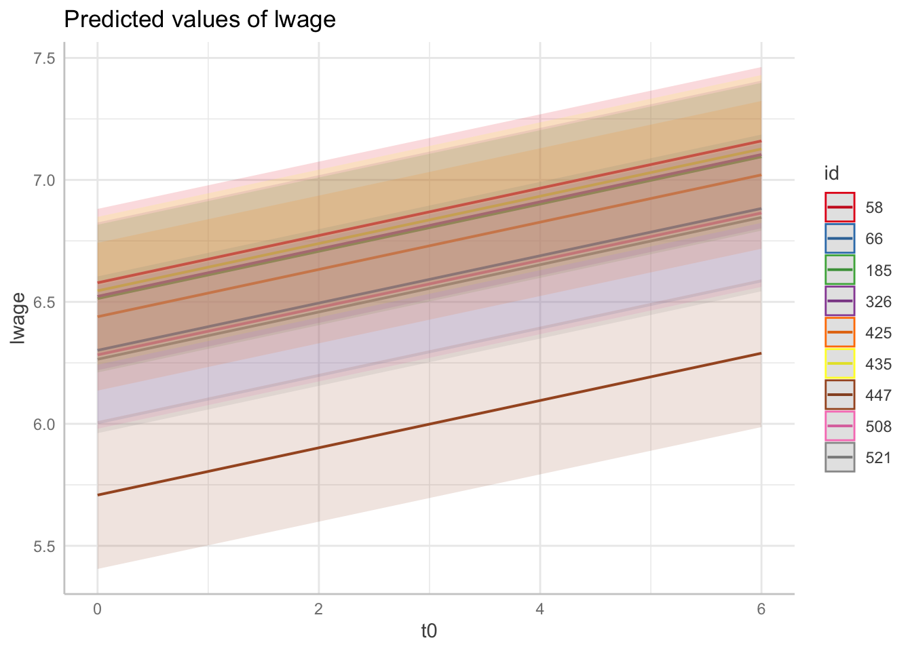
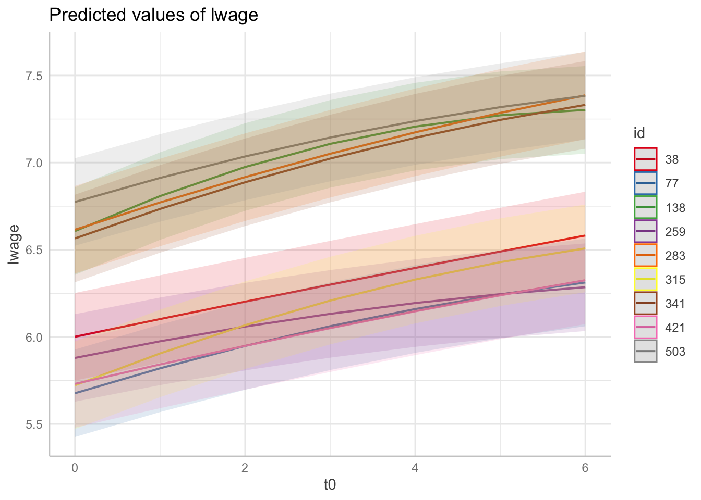

Packages and Setup
library(tidyverse)
library(panelr)
library(gapminder)
library(ggeffects)
library(performance)
theme_set(theme_light(base_family = "Crimson Text"))library(tidyverse)
library(panelr)
library(gapminder)
library(ggeffects)
library(performance)
theme_set(theme_light(base_family = "Crimson Text"))The gapminder dataset is as good as any to practice moving from wide to long format.
I’m going to show you how to do this with tidyverse and with panelr, the later of which is much more intuitive.
Note. The gapminder dataset already comes in long format.
tidyverse
## from long to wide
glimpse(gapminder)Rows: 1,704
Columns: 6
$ country <fct> "Afghanistan", "Afghanistan", "Afghanistan", "Afghanistan", …
$ continent <fct> Asia, Asia, Asia, Asia, Asia, Asia, Asia, Asia, Asia, Asia, …
$ year <int> 1952, 1957, 1962, 1967, 1972, 1977, 1982, 1987, 1992, 1997, …
$ lifeExp <dbl> 28.801, 30.332, 31.997, 34.020, 36.088, 38.438, 39.854, 40.8…
$ pop <int> 8425333, 9240934, 10267083, 11537966, 13079460, 14880372, 12…
$ gdpPercap <dbl> 779.4453, 820.8530, 853.1007, 836.1971, 739.9811, 786.1134, …gap_wide <- gapminder::gapminder |>
pivot_wider(
names_from = year,
values_from = c(lifeExp, gdpPercap, pop),
names_sep = ""
)
glimpse(gap_wide)Rows: 142
Columns: 38
$ country <fct> "Afghanistan", "Albania", "Algeria", "Angola", "Argentin…
$ continent <fct> Asia, Europe, Africa, Africa, Americas, Oceania, Europe,…
$ lifeExp1952 <dbl> 28.801, 55.230, 43.077, 30.015, 62.485, 69.120, 66.800, …
$ lifeExp1957 <dbl> 30.33200, 59.28000, 45.68500, 31.99900, 64.39900, 70.330…
$ lifeExp1962 <dbl> 31.99700, 64.82000, 48.30300, 34.00000, 65.14200, 70.930…
$ lifeExp1967 <dbl> 34.02000, 66.22000, 51.40700, 35.98500, 65.63400, 71.100…
$ lifeExp1972 <dbl> 36.08800, 67.69000, 54.51800, 37.92800, 67.06500, 71.930…
$ lifeExp1977 <dbl> 38.43800, 68.93000, 58.01400, 39.48300, 68.48100, 73.490…
$ lifeExp1982 <dbl> 39.854, 70.420, 61.368, 39.942, 69.942, 74.740, 73.180, …
$ lifeExp1987 <dbl> 40.822, 72.000, 65.799, 39.906, 70.774, 76.320, 74.940, …
$ lifeExp1992 <dbl> 41.674, 71.581, 67.744, 40.647, 71.868, 77.560, 76.040, …
$ lifeExp1997 <dbl> 41.763, 72.950, 69.152, 40.963, 73.275, 78.830, 77.510, …
$ lifeExp2002 <dbl> 42.129, 75.651, 70.994, 41.003, 74.340, 80.370, 78.980, …
$ lifeExp2007 <dbl> 43.828, 76.423, 72.301, 42.731, 75.320, 81.235, 79.829, …
$ gdpPercap1952 <dbl> 779.4453, 1601.0561, 2449.0082, 3520.6103, 5911.3151, 10…
$ gdpPercap1957 <dbl> 820.8530, 1942.2842, 3013.9760, 3827.9405, 6856.8562, 10…
$ gdpPercap1962 <dbl> 853.1007, 2312.8890, 2550.8169, 4269.2767, 7133.1660, 12…
$ gdpPercap1967 <dbl> 836.1971, 2760.1969, 3246.9918, 5522.7764, 8052.9530, 14…
$ gdpPercap1972 <dbl> 739.9811, 3313.4222, 4182.6638, 5473.2880, 9443.0385, 16…
$ gdpPercap1977 <dbl> 786.1134, 3533.0039, 4910.4168, 3008.6474, 10079.0267, 1…
$ gdpPercap1982 <dbl> 978.0114, 3630.8807, 5745.1602, 2756.9537, 8997.8974, 19…
$ gdpPercap1987 <dbl> 852.3959, 3738.9327, 5681.3585, 2430.2083, 9139.6714, 21…
$ gdpPercap1992 <dbl> 649.3414, 2497.4379, 5023.2166, 2627.8457, 9308.4187, 23…
$ gdpPercap1997 <dbl> 635.3414, 3193.0546, 4797.2951, 2277.1409, 10967.2820, 2…
$ gdpPercap2002 <dbl> 726.7341, 4604.2117, 5288.0404, 2773.2873, 8797.6407, 30…
$ gdpPercap2007 <dbl> 974.5803, 5937.0295, 6223.3675, 4797.2313, 12779.3796, 3…
$ pop1952 <int> 8425333, 1282697, 9279525, 4232095, 17876956, 8691212, 6…
$ pop1957 <int> 9240934, 1476505, 10270856, 4561361, 19610538, 9712569, …
$ pop1962 <int> 10267083, 1728137, 11000948, 4826015, 21283783, 10794968…
$ pop1967 <int> 11537966, 1984060, 12760499, 5247469, 22934225, 11872264…
$ pop1972 <int> 13079460, 2263554, 14760787, 5894858, 24779799, 13177000…
$ pop1977 <int> 14880372, 2509048, 17152804, 6162675, 26983828, 14074100…
$ pop1982 <int> 12881816, 2780097, 20033753, 7016384, 29341374, 15184200…
$ pop1987 <int> 13867957, 3075321, 23254956, 7874230, 31620918, 16257249…
$ pop1992 <int> 16317921, 3326498, 26298373, 8735988, 33958947, 17481977…
$ pop1997 <int> 22227415, 3428038, 29072015, 9875024, 36203463, 18565243…
$ pop2002 <int> 25268405, 3508512, 31287142, 10866106, 38331121, 1954679…
$ pop2007 <int> 31889923, 3600523, 33333216, 12420476, 40301927, 2043417…## from wide to long
gap_long <- gap_wide |>
pivot_longer(
cols = matches("\\d$"), # good luck
names_to = c(".value", "year"), # figuring this
names_pattern = "([A-Za-z]*)(\\d+)", # out!!!
names_transform = list(year = as.integer)
)
glimpse(gap_long)Rows: 1,704
Columns: 6
$ country <fct> "Afghanistan", "Afghanistan", "Afghanistan", "Afghanistan", …
$ continent <fct> Asia, Asia, Asia, Asia, Asia, Asia, Asia, Asia, Asia, Asia, …
$ year <int> 1952, 1957, 1962, 1967, 1972, 1977, 1982, 1987, 1992, 1997, …
$ lifeExp <dbl> 28.801, 30.332, 31.997, 34.020, 36.088, 38.438, 39.854, 40.8…
$ gdpPercap <dbl> 779.4453, 820.8530, 853.1007, 836.1971, 739.9811, 786.1134, …
$ pop <int> 8425333, 9240934, 10267083, 11537966, 13079460, 14880372, 12…panelr
gap_long_panelr <- gap_wide |>
long_panel(
id = "country",
wave = "year",
begin = 1952,
end = 2007
)
gap_long_panelr# Panel data: 7,952 × 6
# Entities: country [142]
# Wave variable: year [1952, 1953, 1954, ... (56 waves)]
country year continent lifeExp gdpPercap pop
<fct> <dbl> <fct> <dbl> <dbl> <int>
1 Afghanistan 1952 Asia 28.8 779. 8425333
2 Afghanistan 1953 Asia NA NA NA
3 Afghanistan 1954 Asia NA NA NA
4 Afghanistan 1955 Asia NA NA NA
5 Afghanistan 1956 Asia NA NA NA
6 Afghanistan 1957 Asia 30.3 821. 9240934
7 Afghanistan 1958 Asia NA NA NA
8 Afghanistan 1959 Asia NA NA NA
9 Afghanistan 1960 Asia NA NA NA
10 Afghanistan 1961 Asia NA NA NA
# ℹ 7,942 more rowsNote that panelr has made the missing values explicit, which is something you may want (or not).
Once you gap_long_panelr you’ll notice that this object has an extra class called “panel_data.” The widen_panel() function understands this and can make the change to “wide” effortlessly.
widen_panel(gap_long_panelr)# A tibble: 142 × 170
country continent lifeExp_1952 gdpPercap_1952 pop_1952 lifeExp_1953
<fct> <fct> <dbl> <dbl> <int> <dbl>
1 Afghanistan Asia 28.8 779. 8425333 NA
2 Albania Europe 55.2 1601. 1282697 NA
3 Algeria Africa 43.1 2449. 9279525 NA
4 Angola Africa 30.0 3521. 4232095 NA
5 Argentina Americas 62.5 5911. 17876956 NA
6 Australia Oceania 69.1 10040. 8691212 NA
7 Austria Europe 66.8 6137. 6927772 NA
8 Bahrain Asia 50.9 9867. 120447 NA
9 Bangladesh Asia 37.5 684. 46886859 NA
10 Belgium Europe 68 8343. 8730405 NA
# ℹ 132 more rows
# ℹ 164 more variables: gdpPercap_1953 <dbl>, pop_1953 <int>,
# lifeExp_1954 <dbl>, gdpPercap_1954 <dbl>, pop_1954 <int>,
# lifeExp_1955 <dbl>, gdpPercap_1955 <dbl>, pop_1955 <int>,
# lifeExp_1956 <dbl>, gdpPercap_1956 <dbl>, pop_1956 <int>,
# lifeExp_1957 <dbl>, gdpPercap_1957 <dbl>, pop_1957 <int>,
# lifeExp_1958 <dbl>, gdpPercap_1958 <dbl>, pop_1958 <int>, …Note that there’s a lot of columns with missing values. You’ll have to drop them first with drop_na() if you don’t want them.
gap_long_panelr |>
tidyr::drop_na() |>
widen_panel()# A tibble: 142 × 38
country continent lifeExp_1952 gdpPercap_1952 pop_1952 lifeExp_1957
<fct> <fct> <dbl> <dbl> <int> <dbl>
1 Afghanistan Asia 28.8 779. 8425333 30.3
2 Albania Europe 55.2 1601. 1282697 59.3
3 Algeria Africa 43.1 2449. 9279525 45.7
4 Angola Africa 30.0 3521. 4232095 32.0
5 Argentina Americas 62.5 5911. 17876956 64.4
6 Australia Oceania 69.1 10040. 8691212 70.3
7 Austria Europe 66.8 6137. 6927772 67.5
8 Bahrain Asia 50.9 9867. 120447 53.8
9 Bangladesh Asia 37.5 684. 46886859 39.3
10 Belgium Europe 68 8343. 8730405 69.2
# ℹ 132 more rows
# ℹ 32 more variables: gdpPercap_1957 <dbl>, pop_1957 <int>,
# lifeExp_1962 <dbl>, gdpPercap_1962 <dbl>, pop_1962 <int>,
# lifeExp_1967 <dbl>, gdpPercap_1967 <dbl>, pop_1967 <int>,
# lifeExp_1972 <dbl>, gdpPercap_1972 <dbl>, pop_1972 <int>,
# lifeExp_1977 <dbl>, gdpPercap_1977 <dbl>, pop_1977 <int>,
# lifeExp_1982 <dbl>, gdpPercap_1982 <dbl>, pop_1982 <int>, …The trick to answering this question is to first figure out how to select a random subset of countries when the rows of gapminder don’t represent countries but country-years.
country_list <- unique(gapminder$country)
gapminder |>
filter(country %in% sample(country_list, 10)) |>
ggplot(aes(year, lifeExp, group = country)) +
geom_point(size = 1/2) +
geom_line(alpha = 1/2)
If you want the lines distinguished by colors, you can do something like this:
gapminder |>
filter(country %in% sample(country_list, 10)) |>
ggplot(aes(year, lifeExp, color = country)) +
geom_point(size = 1/2) +
geom_line(alpha = 1/2)
…or maybe by continent:
gapminder |>
filter(country %in% sample(country_list, 10)) |>
ggplot(aes(year, lifeExp, color = continent, group = country)) +
geom_point(size = 1/2) +
geom_line(alpha = 1/2)
The ICC is a summary statistic that only makes sense when you have data whose variance can be partitioned in terms of within and between.
Two typical situations:
Clusters (e.g., “students nested” in classrooms)
Repeated observations (e.g., observations “nested in” individuals).
Panel data is case of the latter. In class we saw an example of a multilevel model, which extends typical regression models by adding a second error term.
For example:
\[ \text{lwage}_{it} = \beta_0 + \beta_1 \text{college}_i + \alpha_i + \epsilon_{it} \]
How much of the variance is within and how much is between? We can get a simple answer to this question by examining the intraclass correlation, defined as:\[\text{ICC} = \frac{\tau^2}{\tau^2 + \sigma^2}\]where \(\tau^2\) is the between-person variance and \(\sigma^2\) is the within-person variance.
There are many ways to do this
Method 1 (full manual)
## Steve's code
# BETWEEN VARIANCE
b_var <- gapminder |>
group_by(country) |> # do calculations separately for ids
summarize(mean_lifeExp = mean(lifeExp)) |> # get each id's mean [lifeExp]
summarize(b_var = var(mean_lifeExp)) |> # get variance of means
as.numeric() # output as a number
b_var[1] 124.2174# WITHIN VARIANCE
w_var <- gapminder |>
group_by(country) |> # do calculations separately for ids
mutate(dev_lifeExp = lifeExp - mean(lifeExp)) |># create time devs from each id's mean
ungroup() |> # calcs on whole data frame
summarize(w_var = var(dev_lifeExp)) |> # get variance of deviations
as.numeric() # output as number
w_var[1] 43.43659## ICC
b_var / (b_var + w_var)[1] 0.7409153Method 2 (using OLS)
ols <- lm(lifeExp ~ country, data = gapminder)
1 - (var(ols$residuals) / var(gapminder$lifeExp))[1] 0.7396694Note. Here I took advantage of the fact that var(gapminder$lifeExp) is the sum of the between and within variance. If you’re curious about this I encourage you to search for “the law of total variance” in probability theory.
Method 3 (using lmer)
mlm <- lmer(lifeExp ~ (1 | country), data = gapminder, REML = FALSE)
performance::icc(mlm)# Intraclass Correlation Coefficient
Adjusted ICC: 0.716
Unadjusted ICC: 0.716Excuse me! The results are too different… what gives?
The numbers differ a bit because lmer() “shrinks” the estimates of the means towards the population mean a bit (in exchange for better “efficiency”). This issue is outside the scope of this homework, but both results are OK!
If you want some intuition of what this “shrinkage” business is all about, I recommend squinting at the following graph:
pred_ols <- broom::augment(ols, newdata = tibble(country = country_list))
df <- coefficients(mlm)$country |>
rownames_to_column("country") |>
full_join(pred_ols)
df |>
rename(lm = ".fitted", lmer = "(Intercept)") |>
mutate(diff = abs(lm - lmer)) |>
mutate(country = fct_reorder(country, diff)) |>
ggplot(aes(y = country)) +
geom_point(aes(x = lm, color = "lm"), size = 1/2) +
geom_point(aes(x = lmer, color = "lmer"), size = 1/2) +
labs(x = "average lifeExp", y = NULL)
Note. In case you didn’t notice, this exercise was taken straight from Steve’s ldar course materials.
data("WageData", package = "panelr")
WageData <- WageData |>
mutate(
college = if_else(ed >= 16, 1L, 0L), # college variable
t0 = t - 1 # start time at 0
)
mod1 <- lmer(lwage ~ college + t0 + (1 | id), REML = FALSE, data = WageData)
mod2 <- lmer(lwage ~ college + t0 + (t0 | id), REML = FALSE, data = WageData)
mod3 <- lmer(lwage ~ college + t0 + I(t0^2) + (t0 + I(t0^2) | id), REML = FALSE,
data = WageData,
## I got this part from Stack Overflow, will update if something's wrong
control = lmerControl(optimizer = 'optimx', optCtrl = list(method = 'nlminb')))Loading required namespace: optimx# compare BICs
BIC(mod1, mod2, mod3) df BIC
mod1 5 -1574.123
mod2 7 -1930.822
mod3 11 -1996.860# get coef
summary(mod3)Linear mixed model fit by maximum likelihood ['lmerMod']
Formula: lwage ~ college + t0 + I(t0^2) + (t0 + I(t0^2) | id)
Data: WageData
Control: lmerControl(optimizer = "optimx", optCtrl = list(method = "nlminb"))
AIC BIC logLik deviance df.resid
-2066.5 -1996.9 1044.3 -2088.5 4154
Scaled residuals:
Min 1Q Median 3Q Max
-13.5294 -0.3002 0.0237 0.3372 14.1080
Random effects:
Groups Name Variance Std.Dev. Corr
id (Intercept) 1.159e-01 0.34038
t0 5.175e-03 0.07194 0.08
I(t0^2) 8.817e-05 0.00939 -0.19 -0.87
Residual 1.611e-02 0.12694
Number of obs: 4165, groups: id, 595
Fixed effects:
Estimate Std. Error t value
(Intercept) 6.281924 0.017114 367.065
college 0.312154 0.032143 9.712
t0 0.118664 0.004612 25.729
I(t0^2) -0.003622 0.000686 -5.280
Correlation of Fixed Effects:
(Intr) colleg t0
college -0.515
t0 -0.115 0.000
I(t0^2) 0.052 0.000 -0.924ggpredict(mod1, terms = c("t0 [all]", "id [sample = 9]"), type = "random") |>
plot()
ggpredict(mod2, terms = c("t0 [all]", "id [sample = 9]"), type = "random") |>
plot()
ggpredict(mod3, terms = c("t0 [all]", "id [sample = 9]"), type = "random") |>
plot()